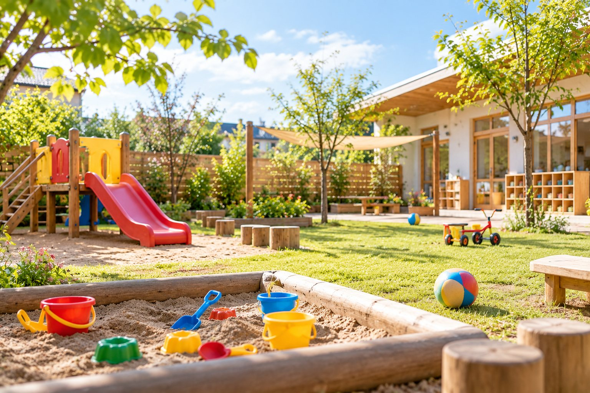
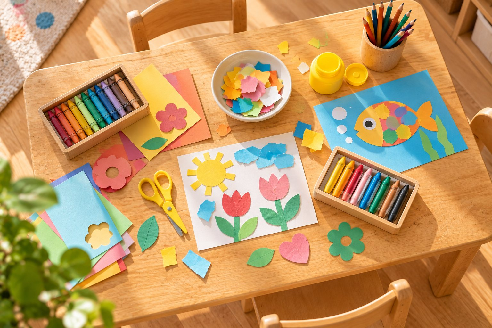

会社へのお問い合わせ、外国人材の受入れのご相談はこちらへ。保育園・児童発達支援・放課後等デイサービスのご利用は、各施設へ直接お問い合わせください。
平日 9:00〜18:00（土曜日・日曜日を除く）

こども家庭庁所管の企業主導型保育事業です。看護師が常駐し、園内で病児保育も行っています。
可児市の待機児童の解消と、地域の子育て支援に取り組んでいます。入園のお申し込みは可児市役所の保育課です。一時預かりも行っています。
フィリピン・ブラジル・ベトナム・ペルーなどにルーツをもつお子さまが通う保育園です。年少・年中は英語、年長は日本語のレッスンがあります。

通訳スタッフがいて、支援が必要な外国籍のお子さまも通訳を通じて療育しています。
かみのてKIDSと同じ支援プログラムで、お子さま一人ひとりの成長を支えています。